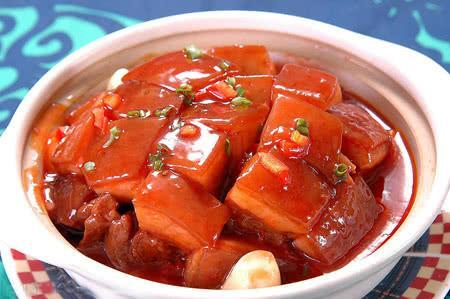

Braised Dongpo Pork
- Recipe NameBraised Dongpo Pork
- Description
Braised Dongpo Pork is a traditional dish in Xiangtan, Hunan Province.
- LevelHigh
- Time Needed80min
- Main IngredientPork ribs 1500g
- Auxiliary IngredientShao wine 250ml, ginger, spring onion, soy sauce, sugar, etc.
- Process
1. Scrape the pork belly strips off the skin, wash it with warm water, put it in a boiling water pot for 5 minutes, boil the bleeding water, wash it, and cut it into cubes.
2. Take a casserole and use a small steaming rack as the bottom. Spread the green onions and ginger, then arrange the pork neatly on top. Add sugar, soy sauce, Shao wine, and green onion knots. Cover the pot and bring it to a boil. After sealing the edges, switch to low heat and simmer for about two hours. When the meat reaches eight maturity, open the lid, turn the meat over, cover and seal again, and continue to simmer crispy on low heat.
3. Then remove the casserole from the fire, skim the slick oil, put it into two earthenware pots with the skin facing up, cover them, and steam them on a high fire for about half an hour until the meat is tender and tender. Put the pot in a steamer before eating, and steam for 10 minutes on high heat.